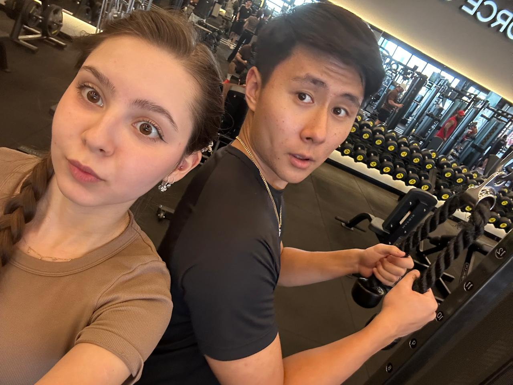
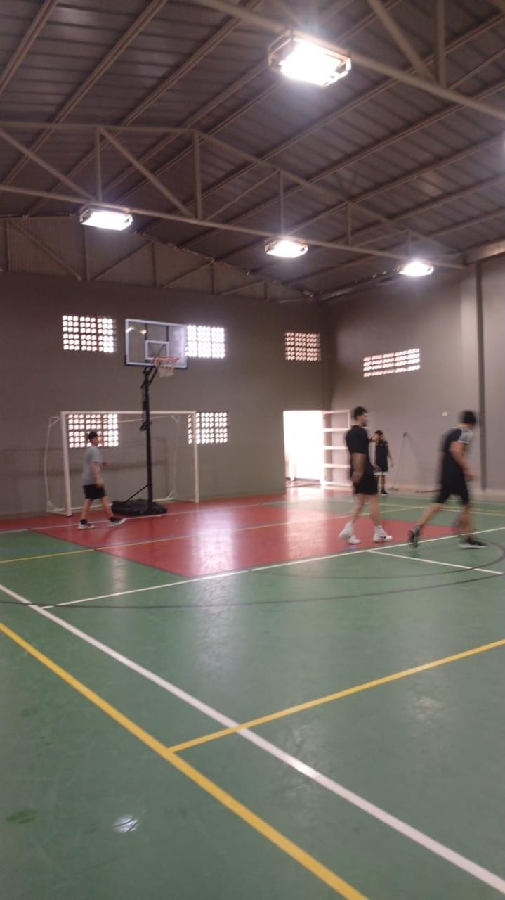
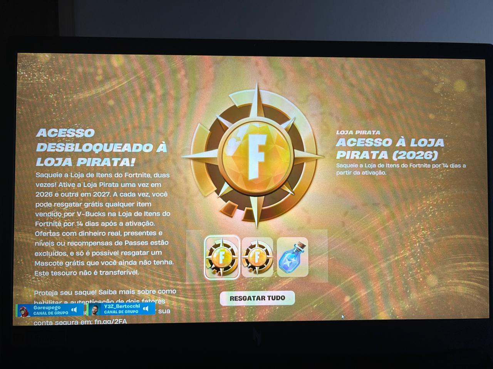
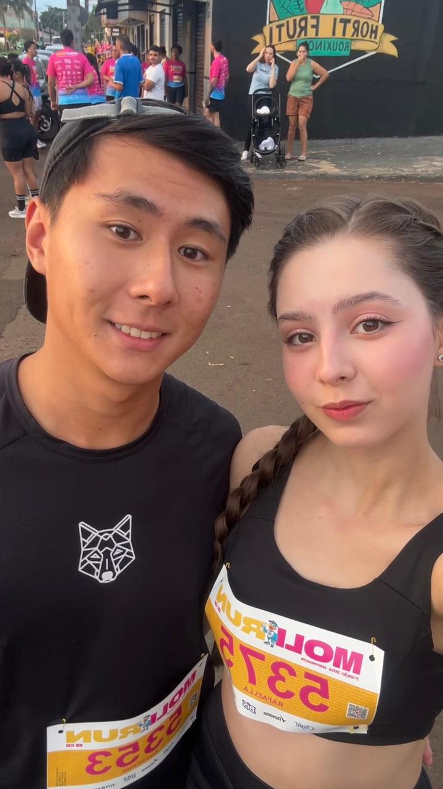

Academia
Comecei a treinar faz 2 anos e virou parte da minha rotina. Fui aprendendo com outras pessoas e hoje tenho bastante conhecimento para treinar sozinho.
Eu sou o Guilherme Futata, tenho 19 anos, moro em Arapongas e estou cursando Engenharia de Software na UniFil. Gosto de jogar videogames, praticar esportes e passar o tempo com a namorada.

Comecei a treinar faz 2 anos e virou parte da minha rotina. Fui aprendendo com outras pessoas e hoje tenho bastante conhecimento para treinar sozinho.

Comecei a jogar basquete no 9º ano do ensino fundamental, por causa do meu tio, que já foi jogador de basquete, mas não chegou muito longe. Porém, aqui na minha cidade ele é muito conhecido pelos jogadores. No ensino médio conheci uns caras que também jogavam e que viraram meus amigos até hoje por causa desse esporte. Atualmente não jogo mais nem treino, porém queria voltar à ativa.

Jogos sempre fizeram parte da minha vida. Meus primos jogavam muito e meu primeiro videogame foi o Wii. Depois ganhei um computador básico, mas que já rodava alguns jogos que eu queria jogar, como Minecraft, CS:GO, Fortnite, Valorant e Roblox. Então comprei um notebook para a faculdade que faz todas as atividades de que preciso e também roda vários jogos.

Comecei a correr antes de virar modinha, pois queria melhorar minha resistência para jogar basquete. Lembro que comecei sozinho, mas com o tempo chamei uns amigos para correr juntos. Desde então, participamos de algumas corridas, mas atualmente só faço treinos leves de vez em quando. Também corro com minha namorada, que gosta de correr.